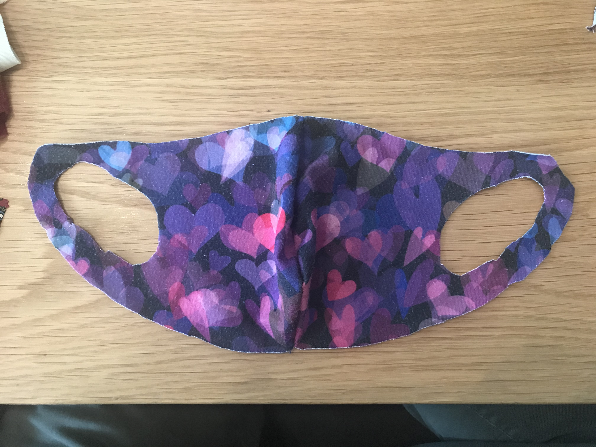

(above) I found an old silk tie that seemed thin enough to breathe through. I cut the stitches that went down the center, and removed the inner padding.
I cut the stitching to undo the folds and edges of the tie. Having a seam ripper would make things easier, but any small knife would work.
Here's all the stitching removed

After the pieces of fabric are separated, lay out the part you want to work with.

Ironing it made it easier to work with.

The fit of the mask is more important than the material because you want to breathe through the fabric, not through the gaps on the side. Go download and print the mask template pdf and cut out your size. For me (5'9 male), I'm using medium here, which fit me snug. Large fits me a little loose, so it needed some adjusting. The fit also depends on how close to the edge you sew, which you can see here.

Use the template on the outer cotton fabric. Your choice of cotton fabric could be anything, but ideally you'll want something with less space between threads that is still breathable.
Take the inner silk fabric

Draw a line right before the ear hole

The inner fabric doesn't need the ear strap. The stretchier cotton is more comfortable.

Double!
Here, the two outer fabrics are stacked. Their outside faces should be touching. Start from one corner, and stitch to the other corner, only doing the edge shown above. The farther you stitch from the edge, the smaller the mask will become.
It should look like this aafter you flip it inside out
Do the same stitching you did for the outer fabric. Again, putting together the faces that will be touching your face. I have pins holding the 2 pieces together because silk slips more than cotton.
Taking the thread backand forth like this is called a running stitch. You should keep about the same distance from the edge as you had for the outer fabrics.
Now you have the outer and inner pieces ready to be sewn together.
This step is optional, but I recommend it for a better fit around the nose. Your breath won't go in your eyes and fog up your glasses.
After you sew the inner piece and before you sew it together with the outer piece, add a pocket for a pipe cleaner (or tin tie). Using any fabric, cut a rectagle that's wider than your pipe cleaner. Sew it onto the inside face of the inner piece, and be sure to leave the right/left side unsewed. The pipe cleaner should slide into the pocket.
Lay the outer piece with the outside up.
Stack the inner piece, inside up (stitched side facing you). Pin both layers together so they don't slip.
Do a running stitch across the top edge, and then the bottom edge. Leave the sides and the middle, so it makes a tunnel going horizontally.

Flip it inside out through the tunnel, and it's ready to wear!
Checkout other mask ideas in the Gallery